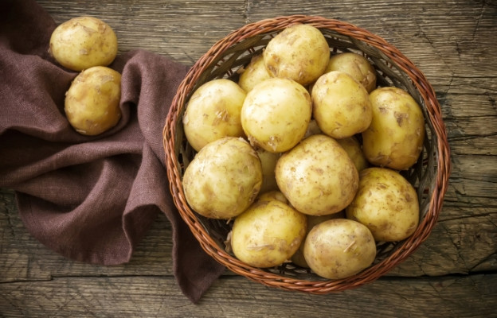
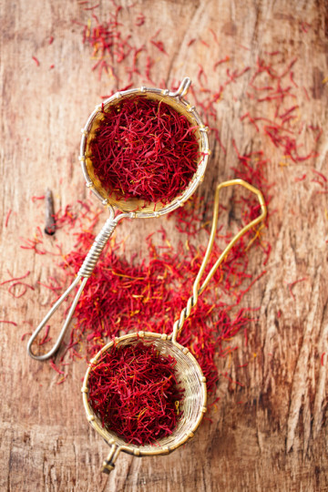
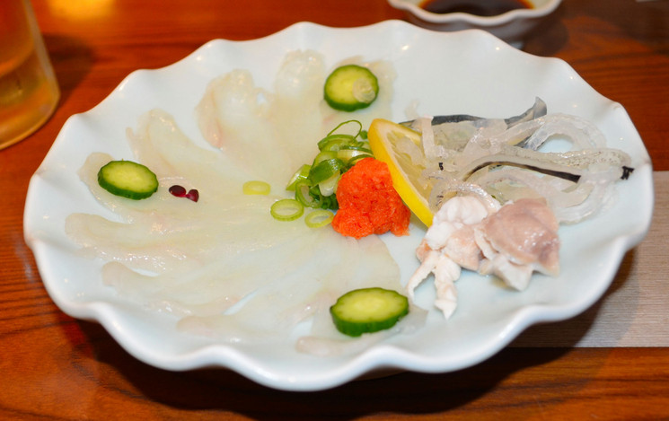

The most expensive chocolate - produced by the Lebanese chocolate factory Patchi for sale in the chain store Harrods - 5000 pounds per box. It contains 49 candies wrapped in handmade Indian silk, decorated with silk roses, Swarovski crystals and gold. The box is also not ordinary - it is made of leather and silk, and the compartments in it - from gold and platinum.
2. Coffee
The most expensive coffee - The most expensive coffee in the world is Kopi Luwak and it is produced from beans that have passed through the stomach and intestines of a small animal called the Asian palm civet. The civet was considered a pest before the discovery that its digestive enzymes improved the taste of coffee by removing its bitterness. The local residents collect the coffee beans that the civets have not digested, the price of which reaches 300-400 dollars per kilogram.
3. Potatoes

The most expensive potatoes - The famous potatoes from the west coast of France, more precisely from the island of Noirmoutier, cost about 500 euros per kilogram. It turns out that this food product can be worth a fortune if fertilized with seaweed. They have a slightly salty sea taste with a subtle lemony aroma and are harvested once a year by hand to avoid injury due to their fragility.
4. Spice
The most expensive spice in the world - The most expensive spice in the world is called saffron. The price of a kilogram of real saffron can reach $6,000. It is determined by its labor-intensive cultivation and extraction technology.

5. Delicacy

The most dangerous and expensive dish - The most mysterious delicacy in the animal world is the famous Fugu fish - the most dangerous and expensive dish of Japanese cuisine. Between 100 and 500 dollars it costs the feeling of a mild narcotic euphoria, smoothly passing into temporary paralysis of all organs and vice versa. Only the truly brave dare try Fugu and experience the effects of nature's nerve-paralytic poison for which there is no antidote.